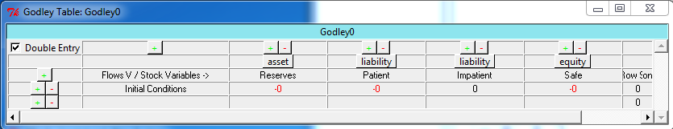
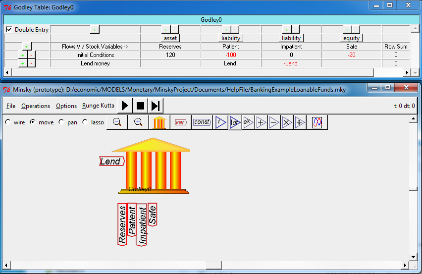

Flows between accounts are entered by typing text labels in the
accounts involved. The source label is entered as a simple name--for
example, if Patient is lending money to Impatient, the word ``Lend''
could be used to describe this action. Firstly you need to create a
row beneath the ``Initial Conditions'' row (which records the amount of
money in each account when the simulation begins). You do this by
clicking on the  key on the Initial Conditions row. This creates a
blank row for recording a flow between accounts.
key on the Initial Conditions row. This creates a
blank row for recording a flow between accounts.

The cell below ``Initial Conditions'' is used to give a verbal description of what the flow is:

The flows between accounts are then recorded in the relevant cells underneath the columns. Here we will start with putting the label ``Lend'' into the Patient column.

Notice that the program shows that the Row Sum for this transaction is currently ``Lend'', when it should be zero to obey the double-entry bookkeeping rule that all rows must sum to zero. This is because a destination for ``Lend'' has not yet been specified. The destination is Impatient's account, and to balance the row to zero this part of the transaction must be entered as ``-Lend'':

This might appear strange if you are not used to accounting standards--``shouldn't the Patient account fall because of the loan, while the Impatient account should rise?''--but what is shown in the table makes sense, because all accounts are perceived from the Bank's point of view. Deposits at a bank are liabilities for the bank, and are shown as a negative amount, while assets are recorded as a positive amount. So a loan from Patient to Impatient decreases the Bank's liabilities to Patient, and increases the Bank's liabilities to Impatient.
The same rule applies to the Initial Conditions (the amount of money in each of the accounts prior to the flows between accounts): the Initial Conditions must sum to zero. This requires that there are entries on the Asset side of the Banking ledger that exactly match the sum of Liabilities and Equity (Equity is also shown as a negative in double-entry bookkeeping):

As you enter flows, these appear on the left hand side of the bank block:
